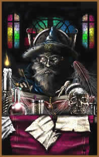

Dois tipos de magia são discriminados
pelos estudiosos de todas as épocas: a Alta
Magia e a Baixa Magia. Jamais devem ser confundidas
com magia negra ou magia branca, que se tratam de tipos de magia
arbitrariamente designados como tal pela idiossincrasia da moral
de quem as trata assim.
A Baixa Magia seria a magia de cunho terrestre,
geralmente pagã (na acepção etimológica
original da palavra: do campo e não como foi posteriormente
adotada significando não-cristão) é
baseada no desregramento dos sentidos. É baseada na carne,
na terra, no suor, no sangue. É o tipo de ritual praticado
pelas tribos ditas primitivas e pelos cultos afro-americanos em
geral. A Alta Magia seria a magia do controle, a magia do domínio
da realidade pelo homem. É um tipo de magia intelectualizada
e fria, baseada no puro espírito, ou melhor, na separação
platônica da carne e do espírito. O Mago escraviza
entidades, ordena coisas, e para tal tem que ser controlado tanto
por dentro quanto por fora. O Mago Cerimonial (de Alta Magia)
é um sujeito que pratica a abstinência dos prazeres
corporais, pois só pode dominar o macrocosmo se seu microcosmo
estiver dominado. A missa é um exemplo de ritual de Alta
Magia, no sentido de que o padre prega, faz sermão, amedronta,
os outros participantes do ritual. Eles comem a carne e bebem
o sangue de cristo (resquício pagão) e recebem o
Espírito Santo. Tudo muito frio e ordenado, baseado no
dogma de um livro (A missa já foi ainda mais cerimonial
e cheia de etiqueta, mas um concílio resolveu popularizar
o ritual, trocando o latim e o padre de costas pela conversa franca
e ameaçadora de um padre regendo pessoas). Na verdade a
maioria dos magos cerimoniais era composta por padres ou abades.
Eliphas Levi
é o maior exemplo.
Existe um sistema, um dogma, comum entre ocultistas
modernos, que prega a sucessão éonica. Éons
seriam períodos de tempo regidos por uma divindade ou característica
dominante. Assim, períodos de tempo grandes, mais ou menos
2000 anos, recebem um rótulo, uma divindade, um signo zodiacal,
uma característica política, social e uma característica
religiosa dominante. Acredita-se que o presente éon começou
neste século ou está por começar, e as características
desse Novo éon ainda são enevoadas. O primeiro éon
(da época histórica) seria o da Deusa, como geralmente
a iconografia é egípcia (a idéia de Aeons
seria originalmente egípcia), Ísis ou Nut fica como
regente desse período. Geralmente se atribui uma organização
social matriarcal a este período, mas esta idéia
é historicamente incorreta. A organização
era tribal ou em clãs, em geral patriarcais mesmo (Algumas
sociedades já tinham até um estado semelhante ao
moderno, mas baseado em dinastias, como o Egito. Na verdade o
Egito e o Oriente Médio nos deram a religião e a
organização social do próximo éon,
o de Osíris, e mesmo hoje existem tribos que vivem no éon
de Ísis, os compartimentos não são estanques).
Os homens que viviam em meio à natureza abundante ainda
não tinham desenvolvido agricultura, simplesmente colhiam
as dádivas da Deusa, Politeísmo, amor filial, culto
da terra, etc, como valores essenciais. Não se conhece
muito a respeito das culturas verdadeiramente do éon de
Ísis simplesmente porque elas não dominavam a escrita.
O segundo éon se atribuiu ao deus Osíris. E é
basicamente o que conhecemos por cristianismo, feudalismo, patriarcado,
exploração indômita da terra, organização
rígida, medo como método de coerção
social, progresso científico, absolutismo, etc.
Neste século ocorreu uma mudança
mais brusca do que nos outros éons. O mundo está
mais unificado e age mais em conjunto, apesar das diferenças.
Todo o progresso científico gerou uma revolução
a nível psicológico-antropológico muito maior
do que nós, que só conhecemos isto, podemos notar.
O individualismo não permite mais religiões
de massa. A religião do futuro ou é a ausência
de religião ou uma religião individualizada. As
pessoas não precisam mais ser aceitas em seu grupo social
para sobreviverem, como antigamente. As pessoas não dependem
mais dos filhos para comerem, portanto não precisam de
muitos filhos. Controlamos nossa fertilidade. Isso é um
marco pouco percebido. A TV foi a última e grandiosa manifestação
do éon passado, com sua pregação para as
massas. Em pouco tempo, via Internet, ninguém vai assistir
a mesma novela que o vizinho, a diversificação vai
ser tamanha que vai ser impossível passar uma mensagem
coerente no sentido de um conspiratório e paranóico
domínio das massas.
Enquanto a Baixa Magia ressurge em alguns movimentos,
como num canto do cisne, a Alta Magia morre. Ninguém mais
agüenta uma ladainha fora da realidade como a que acontece
nas Igrejas, ninguém agüenta aprender hebraico e grego
para chamar espíritos, estudar cabala, e ficar fazendo
pose de sério dentro de um círculo. As pessoas estão
cínicas e irreverentes demais para isto. Sentiriam-se ridículas
fazendo isso.
O futuro da magia está na física
quântica e na realidade virtual. A catarse das raves prova
que o homem não deixou o corpo para trás, como se
esperava no éon passado. Informação é
o poder do Mago moderno, que não trabalha nem com a pena
tampouco com a espada, trabalha com o teclado, à velocidade
da luz. O mago não trabalha na inocência ou na ordem,
trabalha no Caos. E que fique entendido que isso não é
evolução, progresso, melhoria. É transformação,
como da pupa para borboleta ou de ser vivo para cadáver
putrefato.
Extraído
de Aurora Wirth
Adaptado
por Spectrum